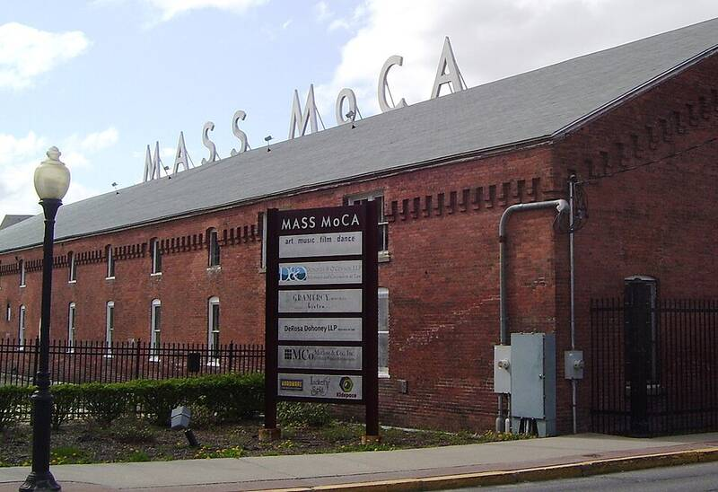

Sprague Electric
North Adams, Massachusetts, 1969

The electronics company that etched the Apollo 11 goodwill messages from 73 world leaders onto a silicon disc the size of a half dollar, which Buzz Aldrin left on the Moon in July 1969. 1
Open in the interactive Watcher
Sources
- Apollo 11 goodwill messages Wikipedia